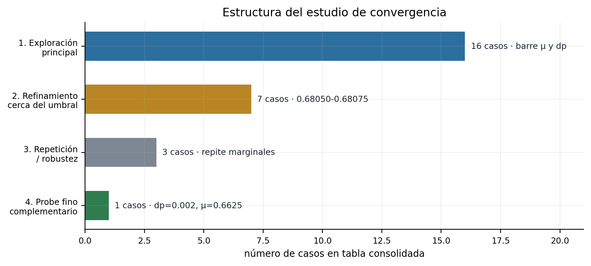
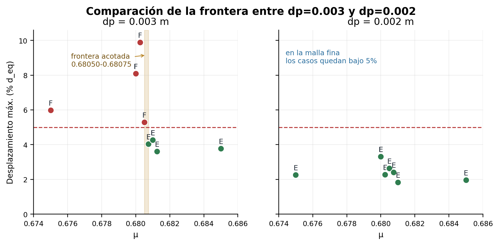
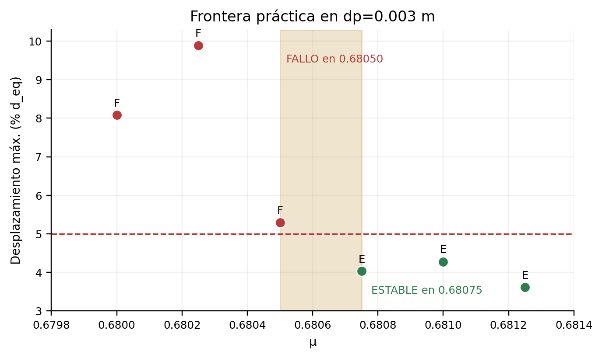
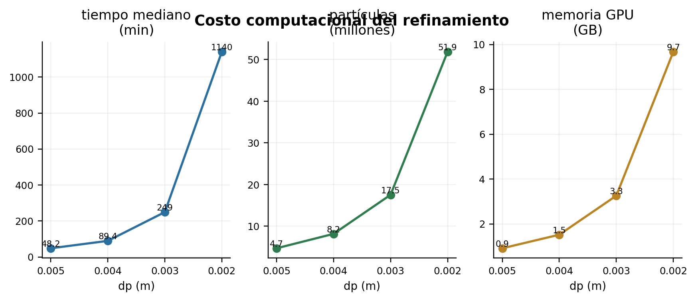
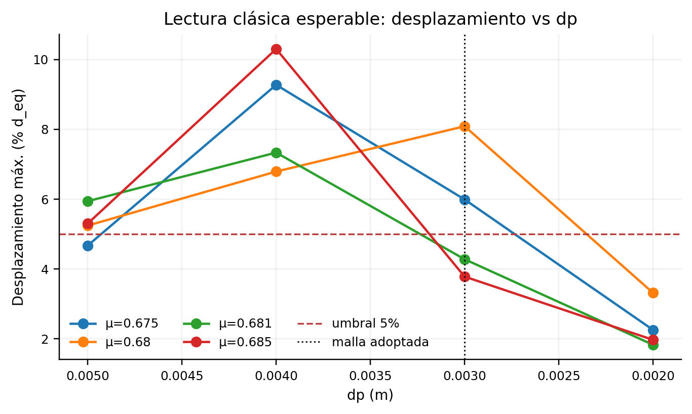
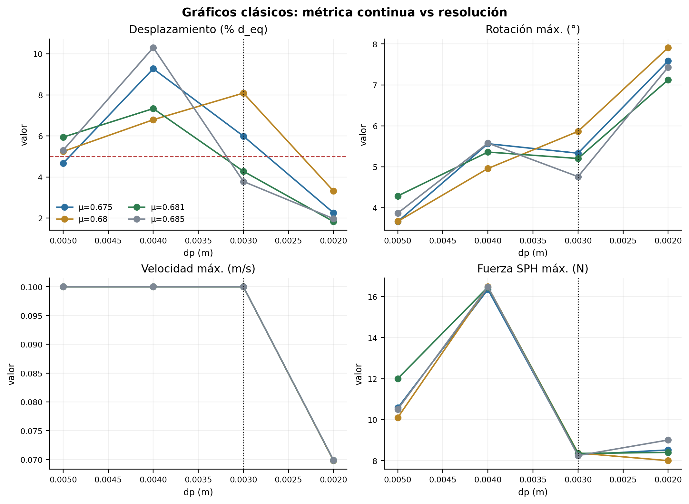
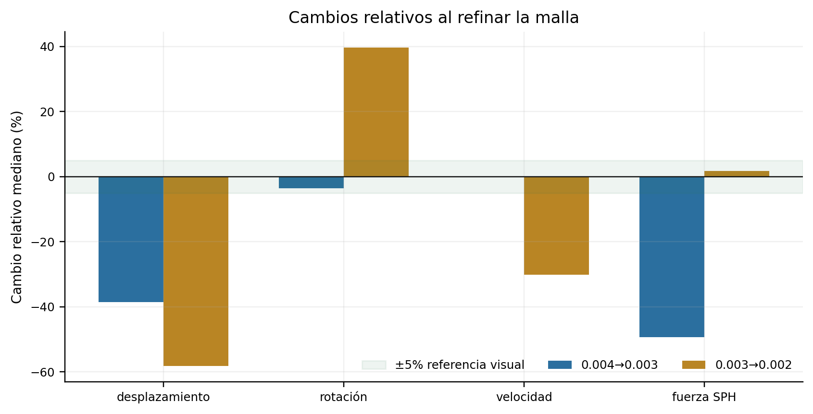
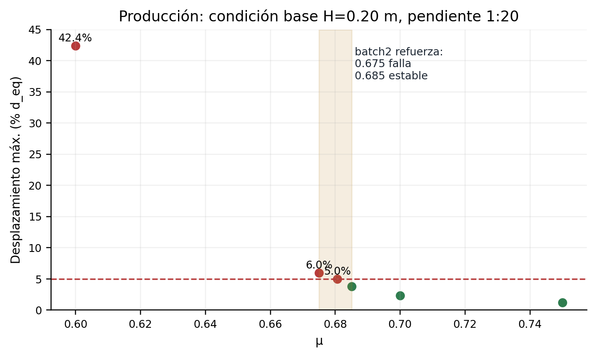
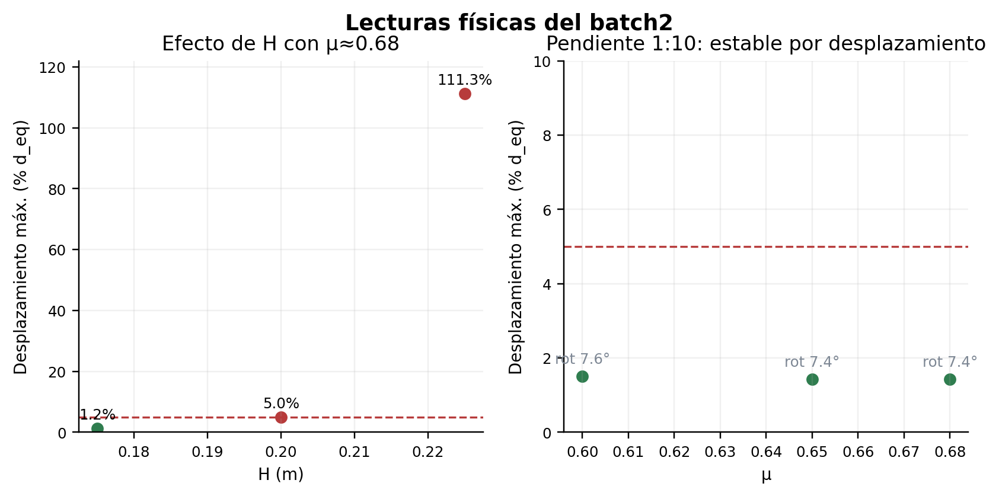
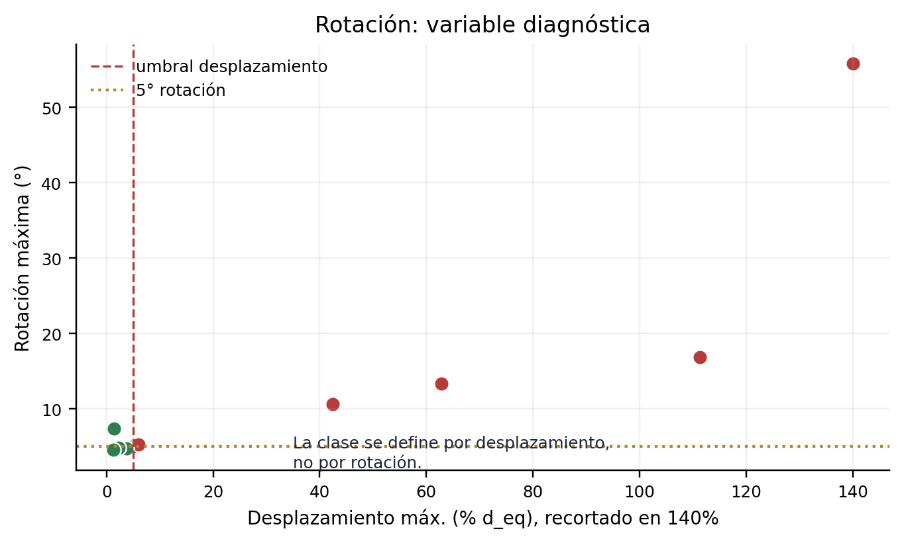

Estudio de convergencia y decisión de malla
Documento técnico para explicar el proceso completo: qué se mantuvo fijo, qué se varió, cómo se ubicó la frontera de estabilidad y por qué se adoptó dp=0.003 m para las simulaciones productivas.
1. Objetivo del estudio de convergencia
El objetivo no fue ajustar una curva genérica ni buscar una única simulación “perfecta”. El objetivo fue decidir una malla de trabajo para la tesis y entender cómo la clasificación estable/falla cambia al modificar la resolución SPH.
La resolución se controla con dp, el espaciamiento inicial entre partículas. La variable física usada para ubicar la frontera fue μ, el coeficiente de fricción bloque-suelo. Para cada malla se buscó el rango de μ donde el bloque pasa de falla a estable.
Esto es importante: la convergencia se trató como sensibilidad de frontera, porque el problema no entrega una respuesta suave única, sino una decisión de umbral.
2. Secuencia usada
El estudio se organizó en familias de corridas. Los nombres internos se mantienen solo para trazabilidad; abajo se indica qué significa cada una.
- Se corrigió y congeló la geometría. El bloque quedó alineado con la pendiente, apoyado sobre la playa y tratado como cuerpo rígido acoplado con Chrono.
- Se definió el criterio de clase. La falla se mide por desplazamiento máximo mayor a 5% de
d_eq. La rotación se conserva solo como diagnóstico. - Se exploró la frontera con
conv_edge. Para varios valores deμydp, se observó dónde el bloque pasa de estable a falla. - Se refinó la zona crítica con
conv_reassure. Se agregaron puntos cerca deμ≈0.6805-0.68075para acotar mejor la transición endp=0.003. - Se hicieron repeticiones con
conv_repeat. Sirven para comprobar que los casos marginales no fueran un accidente operacional. - Se agregó un caso fino
conv_probe. Endp=0.002yμ=0.6625, el bloque siguió estable por desplazamiento. Eso muestra sensibilidad de resolución. - Se tomó una decisión productiva. Usar
dp=0.003 mcomo malla de trabajo y reportar la frontera como práctica, no como valor universal.

3. Resultado de la comparación de mallas
En dp=0.003 m, los casos alrededor de μ≈0.68 cruzan el umbral de desplazamiento. En dp=0.002 m, los casos equivalentes quedan bajo el umbral. Por eso el resultado se interpreta como sensibilidad de resolución.

dp=0.003 aparece una frontera práctica clara. En dp=0.002, los casos cercanos quedan bajo el umbral.4. Decisión de malla
En dp=0.003 m, la transición de la condición base queda acotada entre μ=0.68050 y μ=0.68075. Por eso se adopta dp=0.003 m como malla operativa para producción.


dp=0.002 aumenta fuertemente partículas, memoria y tiempo.Interpretación: no se afirma convergencia asintótica fuerte. Se reporta una frontera práctica condicionada a la malla dp=0.003 m, porque el problema es de umbral y muestra sensibilidad de resolución. La malla fina dp=0.002 m se usa como evidencia de sensibilidad, no como nueva malla productiva.
5. Gráficos clásicos de convergencia
Además de la lectura por frontera, se pueden mostrar los gráficos típicos de convergencia: una métrica continua contra dp. Estos gráficos son útiles para responder a la expectativa metodológica clásica, pero deben leerse como sensibilidad de resolución.
La razón es que el caso está cerca de un umbral de movimiento: el desplazamiento puede cruzar o no el 5% de d_eq con cambios pequeños de resolución. Por eso no se espera necesariamente una curva monótona limpia.


dp. No todas evolucionan de forma monótona.
6. Qué se hizo después
Después de cerrar la convergencia no se siguió refinando dp. Se pasó a producción controlada con dp=0.003 m. Primero se ejecutó un piloto productivo de 5 casos y luego un segundo lote dirigido de 8 casos. Ambos terminaron sin fallos numéricos.
Estos lotes no son todavía una campaña paramétrica completa. Su función fue verificar que el flujo productivo funciona y empezar a leer tendencias físicas bajo la malla ya fijada.

μ=0.675 falla, mientras μ=0.685 y μ=0.700 son estables.

displacement_only.7. Tabla resumida de lotes productivos
| Lote | Caso | H (m) | μ | Pendiente | Clase | Despl. | Rot. |
|---|---|---|---|---|---|---|---|
| batch2 | batch2_h0175_mu0680 | 0.175 | 0.6800 | 1:20 | ESTABLE | 1.23% | 4.56° |
| batch2 | batch2_slope10_mu0600 | 0.200 | 0.6000 | 1:10 | ESTABLE | 1.50% | 7.60° |
| batch2 | batch2_slope10_mu0650 | 0.200 | 0.6500 | 1:10 | ESTABLE | 1.42% | 7.44° |
| batch2 | batch2_base_mu0675 | 0.200 | 0.6750 | 1:20 | FALLO | 5.99% | 5.33° |
| batch2 | batch2_base_mu0685 | 0.200 | 0.6850 | 1:20 | ESTABLE | 3.78% | 4.76° |
| batch2 | batch2_base_mu0700 | 0.200 | 0.7000 | 1:20 | ESTABLE | 2.31% | 4.87° |
| batch2 | batch2_h0225_mu0680 | 0.225 | 0.6800 | 1:20 | FALLO | 111.28% | 16.89° |
| batch2 | batch2_h0225_mu0720 | 0.225 | 0.7200 | 1:20 | FALLO | 62.87% | 13.39° |
| piloto | prod_pilot_slope_check | 0.200 | 0.6800 | 1:10 | ESTABLE | 1.42% | 7.43° |
| piloto | prod_pilot_fail_low_mu | 0.200 | 0.6000 | 1:20 | FALLO | 42.38% | 10.68° |
| piloto | prod_pilot_frontier | 0.200 | 0.6806 | 1:20 | FALLO | 5.02% | 5.08° |
| piloto | prod_pilot_stable_high_mu | 0.200 | 0.7500 | 1:20 | ESTABLE | 1.23% | 4.46° |
| piloto | prod_pilot_stronger_hydraulic | 0.250 | 0.3000 | 1:20 | FALLO | 1341.54% | 55.78° |
8. Términos usados
- dp
- Espaciamiento inicial de partículas SPH. Menor
dpimplica más resolución y más costo. - μ
- Coeficiente de fricción bloque-suelo.
- d_eq
- Diámetro equivalente del bloque, usado para normalizar desplazamientos.
- displacement_only
- Modo de clasificación donde solo el desplazamiento decide ESTABLE/FALLO.
- Frontera práctica
- Intervalo de transición observado para una configuración y resolución específicas.
conv_edge- Familia principal de corridas para ubicar la frontera en distintas mallas y fricciones.
conv_reassure- Corridas adicionales cerca del umbral para reforzar el acotamiento fino.
conv_repeat- Repeticiones de casos marginales para revisar consistencia operacional.
conv_probe- Caso fino suplementario usado para diagnosticar sensibilidad en
dp=0.002.